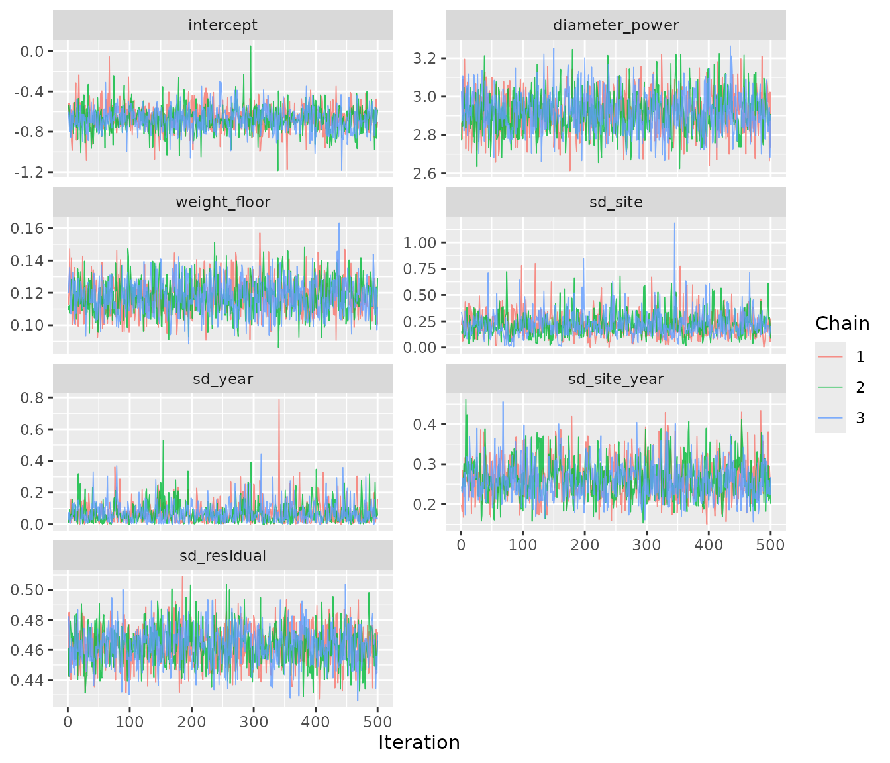
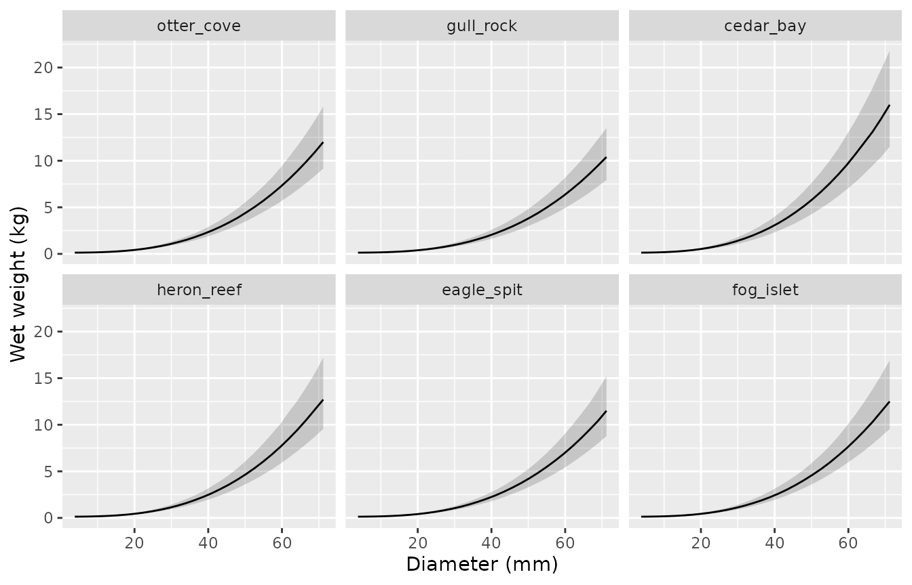
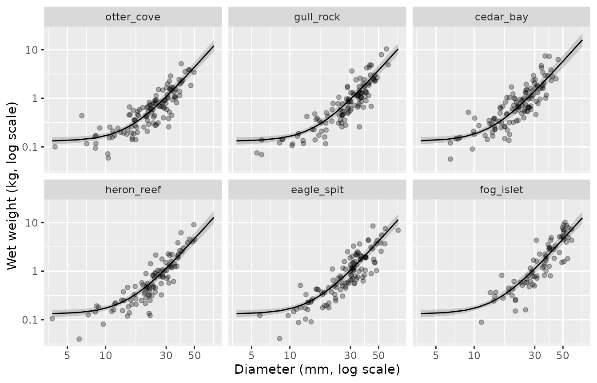
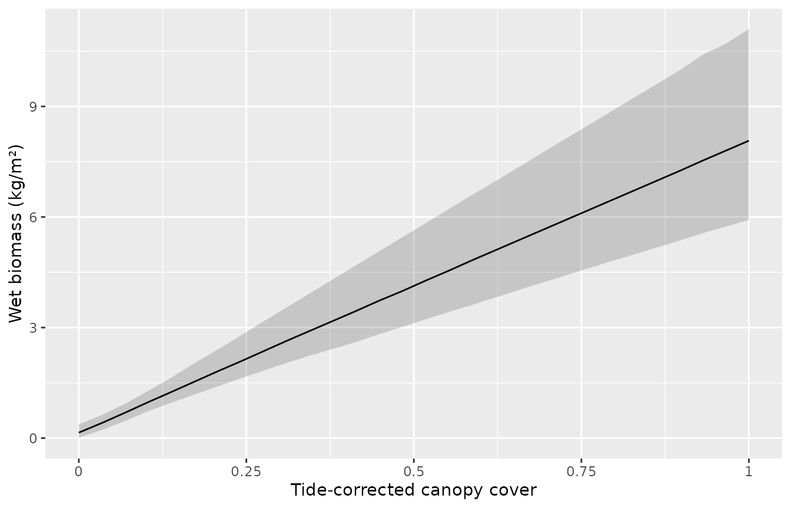
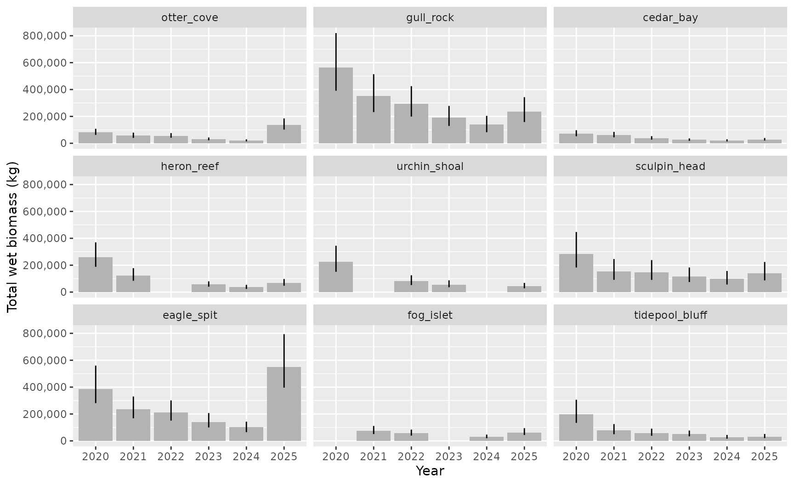
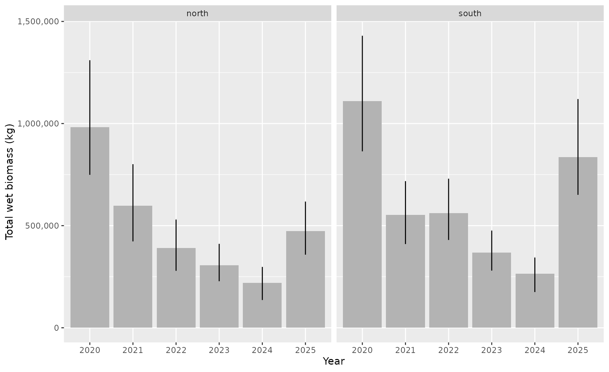

kelpbio estimates the biomass of Nereocystis luetkeana and Macrocystis pyrifera. Total biomass combines plants counted and measured in in situ surveys, the surface canopy area mapped from aerial imagery, and a calibration model that relates the two. See the Methods article for more details on methods, including expected survey design and timing, general statistical approach, model descriptions, and how sub-models are combined to get predictions.
This article uses Nereocystis as an example. The data shown below are simulated, with invented site names.
Glossary
- Plant: one individual (sporophyte), identified by its holdfast (Macrocystis) or stipe (Nereocystis).
- In situ survey: count of the plants within a surveyed area, with all or a sample of the plants measured (e.g., three 30 m sub-surface transects with 2 m swaths, and the maximum sub-bulb diameter measured for 15 plants per transect).
- Plot: area bounding the in situ survey, over which canopy percent cover is calculated.
- Canopy map: surface canopy within a site mapped from aerial imagery, with the tide height recorded at the time of imaging.
- Site: a location of any size with mapped canopy and possibly, matching in situ survey data.
- Site-year: annual snapshot of a site, i.e., in peak season.
Data format
Each dataset is a table with a set of required column names and
values, formatted for model fitting. Expected units are in the column
names (e.g., diameter_mm). The Data format article describes what each
dataset holds, how the datasets are linked, and their columns, as given
by kb_data_columns(). Each dataset has a
kb_check_data_*() function that checks it.
Fit a model
The weight model relates plant weight to diameter, allowing for differences among sites and years.
fit <- kb_fit_weight_nereo(data_weight_sim_nereo)kb_model_describe() prints a detailed description of the
fitted model, including its priors. kb_stancode() prints
the underlying Stan code.
kb_model_describe(fit)
#> Weight allometry - Nereocystis luetkeana
#> Response: wet weight (kg); predictor: plant diameter (mm)
#>
#> Likelihood
#> log(weight_kg) ~ Normal(log(mu), sd_residual)
#> mu = weight_floor + alpha * x^diameter_power
#> log(alpha) = intercept
#> + site_effect[site]
#> + year_effect[year]
#> + site_year_effect[site, year]
#> x = diameter_mm / d0, d0 = 24.9 (geometric mean diameter)
#>
#> Random effects
#> site_effect[site] ~ Normal(0, sd_site) site effect on log(alpha)
#> year_effect[year] ~ Normal(0, sd_year) year effect on log(alpha)
#> site_year_effect[site, year] ~ Normal(0, sd_site_year) site:year effect on log(alpha)
#>
#> Priors
#> intercept ~ Normal(0, 2)
#> diameter_power ~ Normal(2, 1) T[0, ]
#> weight_floor ~ Normal(0, 0.5) T[0, ]
#> sd_residual ~ Exponential(1)
#> sd_site ~ Exponential(1)
#> sd_year ~ Exponential(1)
#> sd_site_year ~ Exponential(1)tidy() or coef() gives the estimate of each
parameter with its lower and upper 95% compatibility limits.
tidy(fit)
#> # A tibble: 7 × 4
#> term estimate lower upper
#> <chr> <dbl> <dbl> <dbl>
#> 1 intercept -0.666 -0.918 -0.421
#> 2 diameter_power 2.92 2.71 3.13
#> 3 weight_floor 0.118 0.098 0.14
#> 4 sd_site 0.2 0.0406 0.521
#> 5 sd_year 0.0544 0.00298 0.254
#> 6 sd_site_year 0.261 0.179 0.372
#> 7 sd_residual 0.463 0.438 0.488Model convergence can be checked with glance() or
kb_converged(). A converged model must meet thresholds for
R-hat, effective sample size (ESS), and divergent transitions. See
?kb_converged for definitions and suggestions for resolving
convergence failures.
glance(fit)
#> # A tibble: 1 × 10
#> n K nchains niters nthin ess_bulk ess_tail rhat perc_divergent
#> <int> <int> <int> <dbl> <int> <dbl> <dbl> <dbl> <dbl>
#> 1 660 7 3 500 4 733. 589. 1.00 0
#> # ℹ 1 more variable: converged <lgl>In a converged model, the chains of each parameter overlap and should resemble a ‘fuzzy caterpillar’.
kb_plot_trace(fit)
See the advanced usage article for more diagnostics.
Predict and plot
The kb_predict_*() functions take a fit object and
generate predictions (estimates with 95% compatibility limits).
If no new data are supplied, predictions are made for each row of the data the model was fitted to.
kb_predict_weight(fit)
#> <kb_predictions> predictor: diameter_mm | response: weight_kg | by: site, year
#> # A tibble: 660 × 8
#> diameter_mm weight_kg site year weight_support estimate lower upper
#> <dbl> <dbl> <fct> <fct> <chr> <dbl> <dbl> <dbl>
#> 1 28.6 0.663 otter_cove 2020 site-year 0.779 0.632 0.96
#> 2 16.5 0.569 otter_cove 2020 site-year 0.262 0.23 0.299
#> 3 27.3 0.841 otter_cove 2020 site-year 0.697 0.567 0.855
#> 4 38.3 1.38 otter_cove 2020 site-year 1.64 1.31 2.08
#> 5 16.2 0.153 otter_cove 2020 site-year 0.255 0.224 0.291
#> 6 29.8 0.793 otter_cove 2020 site-year 0.861 0.697 1.06
#> 7 34.7 1.36 otter_cove 2020 site-year 1.27 1.01 1.58
#> 8 16.2 0.141 otter_cove 2020 site-year 0.255 0.224 0.291
#> 9 25.9 0.311 otter_cove 2020 site-year 0.615 0.505 0.752
#> 10 35.5 1.53 otter_cove 2020 site-year 1.34 1.07 1.68
#> # ℹ 650 more rowsNew data can be supplied to predict at specific values, including values not in the observed data.
new_dat <- data.frame(site = "otter_cove", year = 2023, diameter_mm = c(15, 20))
kb_predict_weight(fit, new_data = new_dat)
#> <kb_predictions> predictor: diameter_mm | response: weight_kg | by: site, year
#> # A tibble: 2 × 7
#> site year diameter_mm weight_support estimate lower upper
#> <chr> <dbl> <dbl> <chr> <dbl> <dbl> <dbl>
#> 1 otter_cove 2023 15 site-year 0.242 0.213 0.277
#> 2 otter_cove 2023 20 site-year 0.388 0.321 0.469kb_new_data() is a helper that generates a grid of new
data, e.g., the full range of diameters at each site, and the
predictions can be plotted with kb_plot_predictions().
predictions <- kb_predict_weight(fit, kb_new_data(fit, by = "site"))
kb_plot_predictions(predictions)
The plot is a ggplot object, so the data can be added as a layer.
kb_plot_predictions(predictions, log_axis = "xy") +
geom_point(
data = data_weight_sim_nereo,
aes(x = diameter_mm, y = weight_kg),
alpha = 0.3,
inherit.aes = FALSE
)
See the advanced usage article for control over how uncertainty is estimated for a new site or year (i.e., one not in the data the model was fitted to).
From plants to total biomass
In situ biomass
The biomass (kg/m²) of an in situ survey is the number of plants counted times their mean weight, over the area surveyed. Mean weight is estimated, with uncertainty, from the weight model and a size model fitted to a sample of measured plants (see Censused areas for surveys where all plants are measured).
fit_size <- kb_fit_size_nereo(data_size_sample_sim_nereo)
data_survey_in_situ_sim_nereo
#> # A tibble: 54 × 8
#> survey_id site year survey_area_m2 plants plot_area_m2 canopy_area_m2
#> <chr> <fct> <fct> <dbl> <int> <dbl> <dbl>
#> 1 otter_cove-202… otte… 2020 140 992 215 87.3
#> 2 otter_cove-202… otte… 2020 80 297 262. 110.
#> 3 gull_rock-2020… gull… 2020 233. 660 233. 30.3
#> 4 cedar_bay-2020… ceda… 2020 40 0 270. 34.3
#> 5 cedar_bay-2020… ceda… 2020 180 861 255. 81.2
#> 6 heron_reef-202… hero… 2020 120 550 217. 73.5
#> 7 urchin_shoal-2… urch… 2020 160 1815 218. 116.
#> 8 sculpin_head-2… scul… 2020 193. 1245 193. 30.1
#> 9 eagle_spit-202… eagl… 2020 200 471 259. 97.3
#> 10 tidepool_bluff… tide… 2020 180 698 229 62.3
#> # ℹ 44 more rows
#> # ℹ 1 more variable: canopy_tide_height_m <dbl>
set.seed(1)
biomass <- kb_predict_biomass_in_situ(
fit_weight_sim_nereo,
fit_size_sim_nereo,
data_survey_in_situ_sim_nereo,
progress = "none"
)
biomass
#> <kb_predictions> response: biomass_kg_m2 | by: site, year
#> # A tibble: 54 × 14
#> survey_id site year survey_area_m2 plants plot_area_m2 canopy_area_m2
#> <chr> <fct> <fct> <dbl> <int> <dbl> <dbl>
#> 1 otter_cove-202… otte… 2020 140 992 215 87.3
#> 2 otter_cove-202… otte… 2020 80 297 262. 110.
#> 3 gull_rock-2020… gull… 2020 233. 660 233. 30.3
#> 4 cedar_bay-2020… ceda… 2020 40 0 270. 34.3
#> 5 cedar_bay-2020… ceda… 2020 180 861 255. 81.2
#> 6 heron_reef-202… hero… 2020 120 550 217. 73.5
#> 7 urchin_shoal-2… urch… 2020 160 1815 218. 116.
#> 8 sculpin_head-2… scul… 2020 193. 1245 193. 30.1
#> 9 eagle_spit-202… eagl… 2020 200 471 259. 97.3
#> 10 tidepool_bluff… tide… 2020 180 698 229 62.3
#> # ℹ 44 more rows
#> # ℹ 7 more variables: canopy_tide_height_m <dbl>, weight_support <chr>,
#> # size_support <chr>, biomass_kg_m2 <rvar[1d]>, estimate <dbl>, lower <dbl>,
#> # upper <dbl>Cover calibration
The cover calibration model relates the estimated biomass of each in situ survey to the percent cover of canopy mapped (e.g., by drone or satellite imagery) within the plot bounding the survey.
fit_cover <- kb_fit_cover_calibration_nereo(biomass)
fit_cover <- fit_cover_calibration_sim_nereo
kb_predict_cover_calibration(fit_cover, kb_new_data(fit_cover)) |>
kb_plot_predictions()
Total biomass
The cover calibration model is applied to each canopy map to estimate its total biomass.
data_survey_canopy_sim_nereo
#> # A tibble: 49 × 6
#> site year canopy_area_m2 canopy_tide_height_m classified_area_m2 region
#> <fct> <fct> <dbl> <dbl> <dbl> <fct>
#> 1 otter_co… 2020 6817 1.2 18504 north
#> 2 gull_rock 2020 53242 0.15 142539 north
#> 3 cedar_bay 2020 5893 1.05 11737 north
#> 4 heron_re… 2020 24787 0.6 51227 north
#> 5 urchin_s… 2020 20431 0.75 55633 south
#> 6 sculpin_… 2020 16455 1 45632 south
#> 7 eagle_sp… 2020 38273 1.3 76960 south
#> 8 tidepool… 2020 20110 0.2 41234 south
#> 9 otter_co… 2021 4819 1.6 9556 north
#> 10 gull_rock 2021 38877 0.2 83128 north
#> # ℹ 39 more rows
totals <- kb_predict_biomass_canopy(fit_cover, data_survey_canopy_sim_nereo)
totals
#> <kb_predictions> response: biomass_kg | by: site, year
#> # A tibble: 49 × 11
#> site year canopy_area_m2 canopy_tide_height_m classified_area_m2 region
#> <fct> <fct> <dbl> <dbl> <dbl> <fct>
#> 1 otter_co… 2020 6817 1.2 18504 north
#> 2 gull_rock 2020 53242 0.15 142539 north
#> 3 cedar_bay 2020 5893 1.05 11737 north
#> 4 heron_re… 2020 24787 0.6 51227 north
#> 5 urchin_s… 2020 20431 0.75 55633 south
#> 6 sculpin_… 2020 16455 1 45632 south
#> 7 eagle_sp… 2020 38273 1.3 76960 south
#> 8 tidepool… 2020 20110 0.2 41234 south
#> 9 otter_co… 2021 4819 1.6 9556 north
#> 10 gull_rock 2021 38877 0.2 83128 north
#> # ℹ 39 more rows
#> # ℹ 5 more variables: cover_support <chr>, biomass_kg <rvar[1d]>,
#> # estimate <dbl>, lower <dbl>, upper <dbl>
kb_plot_predictions(totals, geom = "bar")
pool_by pools the estimates by group, in this case to
give the total biomass in each year and region, summed across sites,
with the uncertainty of the sum.
set.seed(1)
kb_predict_biomass_canopy(
fit_cover,
data_survey_canopy_sim_nereo,
pool_by = c("region", "year")
) |>
kb_plot_predictions(geom = "bar")
See the methods article for more detail, including a diagram of a typical survey layout that shows how a plot relates to its site.
Dry, carbon, and nitrogen biomass
A wet/dry model fit converts wet to dry biomass, a carbon model fit converts dry biomass to carbon, and a nitrogen model fit converts dry biomass to nitrogen.
kb_predict_biomass_canopy(
fit_cover,
data_survey_canopy_sim_nereo,
wetdry = fit_wetdry_sim_nereo,
carbon = fit_carbon_sim_nereo,
measure = "carbon"
)
#> <kb_predictions> response: carbon_biomass_kg | by: site, year
#> # A tibble: 49 × 11
#> site year canopy_area_m2 canopy_tide_height_m classified_area_m2 region
#> <fct> <fct> <dbl> <dbl> <dbl> <fct>
#> 1 otter_co… 2020 6817 1.2 18504 north
#> 2 gull_rock 2020 53242 0.15 142539 north
#> 3 cedar_bay 2020 5893 1.05 11737 north
#> 4 heron_re… 2020 24787 0.6 51227 north
#> 5 urchin_s… 2020 20431 0.75 55633 south
#> 6 sculpin_… 2020 16455 1 45632 south
#> 7 eagle_sp… 2020 38273 1.3 76960 south
#> 8 tidepool… 2020 20110 0.2 41234 south
#> 9 otter_co… 2021 4819 1.6 9556 north
#> 10 gull_rock 2021 38877 0.2 83128 north
#> # ℹ 39 more rows
#> # ℹ 5 more variables: cover_support <chr>, carbon_biomass_kg <rvar[1d]>,
#> # estimate <dbl>, lower <dbl>, upper <dbl>Pre-fit models
The kelpbiodata package holds public datasets, with models pre-fit to them. The pre-fit models can be used when data have not been collected at your sites for a particular sub-model, such as harvested plants for weight allometry or tissue samples for the dry:wet ratio and carbon fraction. There is a pre-fit model for every sub-model, including the cover calibration, so canopy biomass can be estimated from a canopy map alone.
set.seed(1)
kb_predict_biomass_in_situ(
kelpbiodata::fit_weight_hakai_nereo,
kelpbiodata::fit_size_hakai_nereo,
data_survey_in_situ_sim_nereo[1:3, ],
progress = "none"
)Sites or years in the user’s data that are not in the pre-fit model’s dataset are treated as new levels, so their estimates have wider uncertainty.
User data can also be combined with a kelpbiodata dataset to increase the number of observations. For example, if plants have been harvested at only a couple of sites, combining them with the kelpbiodata Hakai Institute weight data gives a better estimate of the general weight allometry relationship, while the site-level random effect still gives an estimate for each site of interest from the user’s data.
data_weight <- dplyr::bind_rows(
kelpbiodata::data_weight_hakai_nereo,
dplyr::filter(data_weight_sim_nereo, site %in% c("otter_cove", "gull_rock"))
)
# 3 chains of 500 draws match the 1500 draws of fit_size_sim_nereo.
fit_combined <- kb_fit_weight_nereo(
data_weight,
chains = 3L,
niters = 500L,
nthin = 4L,
seed = 1L,
progress = "none",
control = list(adapt_delta = 0.99)
)
set.seed(1)
kb_predict_biomass_in_situ(
fit_combined,
fit_size_sim_nereo,
data_survey_in_situ_sim_nereo[1:3, ],
progress = "none"
)Censused areas
If every plant within a survey area is counted and measured (a full
census), a size model is not needed, and per_area = FALSE
gives the total biomass in the surveyed area. The uncertainty in biomass
then comes only from the weight model. When every plant in a site is
counted and measured, no calibration is needed.
data_size_census_sim_nereo
#> # A tibble: 6,022 × 3
#> survey_id diameter_mm partial
#> <chr> <dbl> <lgl>
#> 1 otter_cove-2020-1 28.9 FALSE
#> 2 otter_cove-2020-1 15.5 TRUE
#> 3 otter_cove-2020-1 18.6 FALSE
#> 4 otter_cove-2020-1 21.6 FALSE
#> 5 otter_cove-2020-1 40.4 FALSE
#> 6 otter_cove-2020-1 24.5 FALSE
#> 7 otter_cove-2020-1 30.7 FALSE
#> 8 otter_cove-2020-1 9.2 TRUE
#> 9 otter_cove-2020-1 35.1 FALSE
#> 10 otter_cove-2020-1 23.4 FALSE
#> # ℹ 6,012 more rows
# The censused surveys, with their counts taken from the census.
census_surveys <- dplyr::filter(
data_survey_in_situ_sim_nereo,
survey_id %in% data_size_census_sim_nereo$survey_id
)
census_surveys <- dplyr::select(census_surveys, -plants)
kb_predict_biomass_in_situ(
fit_weight_sim_nereo,
data_size_census_sim_nereo,
census_surveys,
per_area = FALSE,
progress = "none"
)
#> Warning: 5 values of diameter_mm lie far outside the fitted range (3.8 to 71.2).
#> ℹ Check that the values are in millimetres.
#> <kb_predictions> response: biomass_kg | by: site, year
#> # A tibble: 7 × 12
#> survey_id site year survey_area_m2 plot_area_m2 canopy_area_m2
#> <chr> <fct> <fct> <dbl> <dbl> <dbl>
#> 1 otter_cove-2020-1 otter_cove 2020 140 215 87.3
#> 2 otter_cove-2020-2 otter_cove 2020 80 262. 110.
#> 3 otter_cove-2021-1 otter_cove 2021 250. 250. 146.
#> 4 otter_cove-2022-1 otter_cove 2022 232 232 70.6
#> 5 otter_cove-2023-1 otter_cove 2023 160 269. 41.6
#> 6 otter_cove-2024-1 otter_cove 2024 180 260. 43.9
#> 7 otter_cove-2025-1 otter_cove 2025 220 270. 196.
#> # ℹ 6 more variables: canopy_tide_height_m <dbl>, weight_support <chr>,
#> # biomass_kg <rvar[1d]>, estimate <dbl>, lower <dbl>, upper <dbl>Macrocystis
Every counted Macrocystis plant has its fronds recorded, so a size census is always used in place of a size model. The calibration and totals follow as for Nereocystis.
set.seed(1)
biomass_macro <- kb_predict_biomass_in_situ(
fit_weight_sim_macro,
data_size_census_sim_macro,
data_survey_in_situ_sim_macro,
progress = "none"
)More information
For additional information:
- Data format lists the datasets, their columns, and how they link.
- Methods describes the models and how predictions are computed.
- Advanced usage covers priors, diagnostics, and working with other Stan packages.